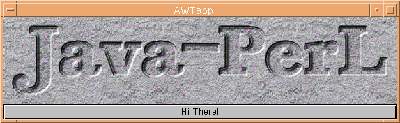

Luckily, that didn't happen. It's true that Larry Wall is employed by O'Reilly & Associates, but that doesn't mean that Perl has suddenly and inexplicably become a commercial product. Larry is still free to work on Perl, and Perl will continue to be free, as it always has been. So, what does O'Reilly have Larry do until the wee hours of the morning when he's not hacking on Perl? The first commercial Perl tool he has developed is JPL, a Java-Perl integration kit, which is bundled exclusively with the Perl Resource Kit (http://perl.oreilly.com). Unfortunately, the initial JPL design was rejected after it had already been publicized.
The goal of JPL is to help Perl and Java communicate with one another. This means two things: first, that JPL should be a back-end for the Perl compiler, generating Java bytecode. Second, that it should make Perl's language features available from Java, and vice versa. Unfortunately, the first goal had to be laid aside in order to make the first release of JPL as useful as possible.
Having JPL produce Java bytecode would be of limited value unless Larry were to completely rewrite Perl in Java. This is because many of the features that draw us to Perl, such as regular expressions and rapid text manipulation, aren't available in the core JDK (Java Development Kit). Any program expressed in Java bytecode must only employ features in the core language and API if it is to be portable, so if JPL generated Java bytecode, it would necessarily prevent you from writing interesting Perl programs - you'd only be able to use the language features of Perl that already exist in Java. Perl's unique features would only be feasible with a platform-dependent shared library.
So a bytecode-generating JPL didn't seem very practical. After all, if you want Java, you know where to find it. Larry, while not abandoning the goal of bytecode generation, decided to add features to JPL that would permit the maximum interaction between the languages. (Java bytecode generation, that is. Perl already generates its own platform-independent bytecode, thanks to Malcolm Beattie's Perl compiler (available from the CPAN as modules/by-modules/B).)
So, does JPL allow you to write an applet in Perl? No. Instead, JPL can be used with RMI to build a multi-tier applet that invokes Perl methods on your web server. (Remote Method Invocation. An API that allows objects in one Java Virtual Machine (JVM) to remotely invoke the methods of objects running in another JVM.) Can you build JPL applications that make use of Java's rich graphical offerings while benefiting from Perl's text processing and networking capabilities? Absolutely - the Perl resource kit includes a sample application: Shawn Wallace's graphical front-end to the FTPSearch engine (http://ftpsearch.ntnu.no/). Java is used for the user interface, and Perl is used for network communications (using LWP, naturally) and for manipulating and processing the results of searches.
JPL is extremely straightforward to use. Perl code can be embedded inside Java applications simply by enclosing Perl code within methods declared with the keyword perl. The Perl methods must be delimited with double curly braces, as shown in JPLsimple.jpl.
Note that although Java gives you a default constructor for free, I have included one for clarity (the JPLSimple() subroutine) even though it does nothing other than construct a new instance of the class. The main() method is invoked by default when you run this program through the Java interpreter; it, in turn, invokes sayHelloToTheNicePeople(), an instance method of the JPLSimple class.
Of course, Java itself doesn't know what to do with perl methods - that's where JPL helps. One major component of JPL is its preprocessor, which analyzes your source code (which must reside in a .jpl file) and generates a .pl file, a .java file, a .c file, and an .h file. The perl methods become native methods within the .java file, and the .pl file ends up containing the actual Perl methods. (In Java, a native method is a function implemented in some other program, probably in C or some other platform-dependent fashion.) The .c and .h files contain the native methods that bridge between Java and Perl. These are compiled into a platform-dependent shared library. Fortunately, the JPL kit includes a Makefile template that does all this work for you, so you only need to write your jpl file, copy in the Makefile, and type make.
To use JPL, you must have built Perl as a shared library, and you must be using your comptuer's malloc(), as opposed to the malloc() that comes with Perl. In addition to the preprocessor, JPL includes a number of other components:
The libPerlInterpreter Shared Library. This shared library is the glue between the Java language and the libperl shared library. This enables Java to create an instance of the Perl interpreter.
The JNI Module. This is a Perl module that provides an interface to the Java Native Interface (JNI). It offers access to many aspects of Java, allowing you to call into Java, create Java objects, and access other internal features of a Java Virtual Machine.
The JPL::Class and JPL::Autoloader Modules. These modules allow your Perl methods to load and instantiate Java classes at runtime. The Autoloader performs the necessary magic to determine which method you really wanted - unlike Perl, Java provides support for implicit method overloading. This means that there can be several different methods with the same name, differentiated only by the type and number of arguments that each method accepts.
Although JPL provides a lot of goodies on the Perl side, the current release of the JDK includes a user-level thread package that makes it impossible to use parts of the Java API (such as AWT, the Abstract Windowing Toolkit) when Java is embedded somewhere else. This is because the green threads package overrides some system calls, such as those involving I/O. (The Solaris version of Java (and versions of Java based on it) uses a user-level threading package called "green threads," instead of native threads, so that it can pretend to be a single-threaded process from the operating system's perspective. This has two drawbacks: first, the green threads package doesn't make effective use of multiprocessor machines; and second, if green threads use blocking I/O, the entire process blocks. That's why green threads work in conjunction with an I/O manager that converts all blocking I/O calls to nonblocking equivalents.) As a result, it is suggested that anything you write with JPL involve Perl code embedded in Java. Happily, you can call back into Java code from embedded Perl code without worrying about the overridden system calls. I have found that this model works quite well for JPL development.
Before you can create a Java object from within Perl, you must import the class definition with a use JPL::Class 'classname' statement:
use JPL::Class 'java::awt::Button';
You can supply a list of classes as well:
use JPL::Class qw(java::awt::Button java::awt::Frame);
You'll notice that the Perl package delimiter (::) is used for the Java class names, rather than the Java package delimiter (.). The reason for this is quite simple: the period isn't a valid package delimiter in Perl, and in order for you to use the class at all in Perl, you need to do it on Perl's terms. The only time you'll see the Java package delimiter is in method lookups, shown later. To create an instance of the object, you only need to call its constructor from within Perl, as in:
my $btn = new java::awt::Button;
JPLSimple.jpl showed you only how to invoke a constructor method: JPLSimple.jpl - Embedding Perl in Javanew(), which takes no arguments and returns no values. (Well, it "returned" a new instance of an object, but constructors are declared as void in Java.) This is a vanilla JPL method call; if you want to invoke a method that takes arguments or returns values, life gets a little more complicated.
Each method is uniquely identified by its signature. A method signature is a combination of its argument types and return values. Before you can call a method, you need to look up its signature with the getmeth() function if it has either arguments or return values. getmeth() is exported into all JPL programs by default, and returns a string with the full method signature. It requires three arguments: the name of the method to look up, a reference to an array consisting of the argument types, and a reference to an array containing the return type.
Here are a couple of examples. The first call to getmeth() looks up the method void setLabel(String label); the second looks up Component add(String name, Component comp).
my $setLabel = getmeth('setLabel',
['java.lang.String'], []);
my $add = getmeth('add',
['java.lang.String','java.awt.Component'],
['java.awt.Component']);
Once you've looked up a method, you can invoke it through an object. Note that we supply the method name as the string $setLabel; we can't simply invoke setLabel(). The string $setLabel contains the JPL signature of the method, which happens to be setLabel__Ljava_lang_String_2__V. Here's how you'd invoke setLabel() via the $btn object:
$btn->$setLabel("Hi There!");
The example program, JPL Example, demonstrates some possible interactions between Perl and Java. It creates a Frame containing two objects: a Canvas onto which an image is drawn, and a Button that displays the words "Please do not press this button again" when you press it.
That Button is created within plSample(), a Perl method which takes the Frame as an argument and is invoked within the constructor. Within plSample(), a Button is created. The label for the button is set using the setLabel() method, and an ActionListener is added to the Button. The ActionListener is an instance field of the class, and must be accessed through the method corresponding to it, $self->al(). Finally, the button is added to the Frame, and the Perl method is done. Here's the Frame in action.

JPL is a work in progress, and will continue to grow. And it does more than what I've shown here. It provides access not just to Java objects and methods, but JNI functions as well, and handles automatic conversion between Perl variables and Java arrays.
_ _END_ _